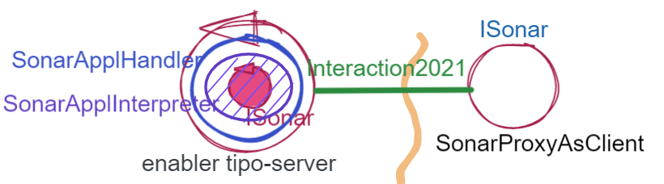
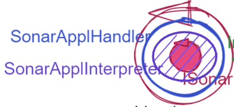
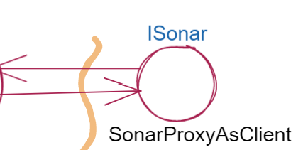
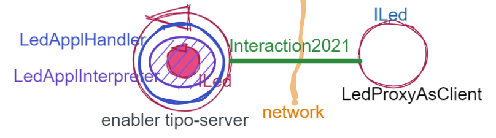
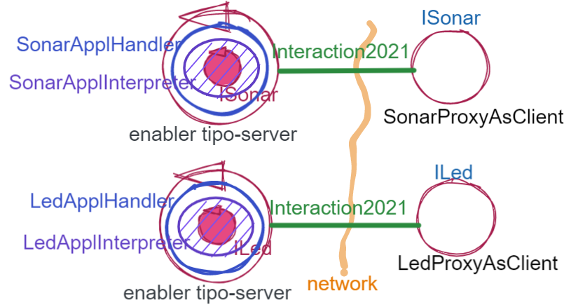
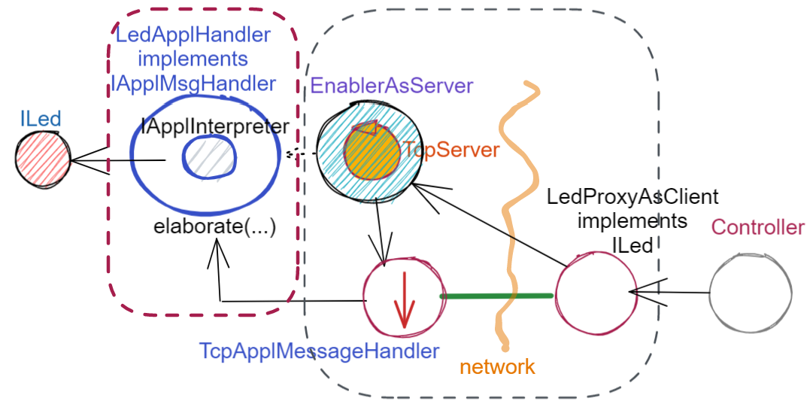

Abilitatori di comunicazione¶
L’analisi del problema ha posto in evidenza (si veda Il concetto di ‘oggetto enabler’) la opportunità/necessità, di introdurre nel sistema degli enabler, che hanno lo scopo di fornire funzionalità di ricezione/trasmissione di informazione su rete a un nucleo di core-code incapsulato al proprio interno.
Nell’ambito di un processo di sviluppo bottom-up in cui il procollo TCP è la tecnologia di riferimento per le comunicazioni, risulta naturale pensare subito a un enabler tipo-server capace di ricevere richieste da parte di client remoti (normalmente dei Proxy).
Prima di procedere, è però opportuno approfondire l’analisi del probleama.
Approfondimento della analisi del problema¶
Un componente capace di abilitare un altro componente (diciamo un POJO) alle comunicazioni via rete deve essere capace di comprendere diversi ‘linguaggi’ (qui il termine è usato in senso lato):
il linguaggio del protocollo usato come tecnologia-base. Poichè abbiamo prospettato l’uso di diversi protocolli un enabler deve rendere possibile l’uso di tutti i protocolli citati in Tipi di protocollo;
il linguaggio usato per descrivere il payload di un messaggio inviato/ricevuto mediante l’uso di un protocollo. Ad esempio, per accendere un Led si potrebbe scrivere il comando in molti modi diversi:
on turnOn led( cmd, on ) ...
il linguaggio usato per descrivere la risposta ad un messaggio di richiesta, che l’enabler deve poter inviare al mittente in modo trasparente al livello applicativo. Ad esempio per conoscere lo stato del Led, il mittente può inviare la richiesta
getLedState(nomeLed)e aspettarsi una rispostastate(nomeLed,V)conV=on/offo altro.
Mentre l’enabler è chiamato a comprendere il linguaggio del protocollo, la interpretazione del linguaggio del payload e del linguaggio della risposta deve essere demandata al codice scitto dall’application designer.
Inoltre è anche ovvio che l’enabler non deve includere codice relativo alla gestione di un messaggio, ma solo usare codice fornito dal livello applicativo, mediante - ad esempio - la tecnica dell’injection (alla costruzione o a run time).
Nel passare alla fase di progetto/realizzazione, ci concentriamo per ora sul solo protocollo TCP, riservando l’estensione ad altri protocolli a uno Sprint successivo.
Enabler tipo-server¶
Dfiniamo un enabler tipo-server che demanda la gestione dei messaggi ricevuti ad oggetti (handler) di una classe che implementa L’interfaccia IApplMsgHandler.
public class EnablerAsServer{
private static int count=1;
protected String name;
protected ProtocolType protocol;
protected TcpServer serverTcp;
public EnablerAsServer(String name, int port,
ProtocolType protocol, IApplMsgHandler handler ) {
try {
this.name = name;
this.protocol = protocol;
if( protocol != null ) setServerSupport( port, protocol, handler );
}catch (Exception e) { ... }
}
protected void setServerSupport(int port,ProtocolType protocol,
IApplMsgHandler handler) throws Exception{
if( protocol == ProtocolType.tcp ) {
serverTcp = new TcpServer( "EnabSrvTcp_"+count++, port, handler );
}else if( protocol == ... ) { ... }
...
}
public void activate() {
if( protocol == ProtocolType.tcp ) {
serverTcp.activate();
}else ...
}
public void deactivate() {
if( protocol == ProtocolType.tcp ) {
serverTcp.deactivate();
}else ...
}
}
Un EnablerAsServer non è un server.
Notiamo che un EnablerAsServer:
non è un server, ma incapsula il TCPServer introdotto in precedenza;
opera in modo da fornire a un handler di tipo IApplMsgHandler la capacità di essere attivato da un messaggio e di inviare risposte al mottente;
prevede la possibilità di introdurre server basati su altri protocolli (si veda UDP oltre il TCP).
Testing di EnablerAsServer¶
Introduciamo il codice della classe EnablerAsServer nel progetto it.unibo.comm2022
e impostiamo un semplice test molto simile a quanto proposto in Testing del ProxyAsClient.
public class TestEnablers {
private EnablerAsServer enabler;
private int port = 8056;
private ProtocolType protocol = ProtocolType.tcp;
private ProxyAsClient aproxy;
@Before
public void setup() {
enabler = new EnablerAsServer("aSrv",port,protocol,
new NaiveApplHandler("naiveH" ) );
aproxy = new ProxyAsClient("aPxy", "localhost", ""+port, protocol );
}
@After
public void down() {
enabler.stop();
}
@Test
public void testEnablers() {
enabler.start();
String req = "aRequest";
String answer = aproxy.sendRequestOnConnection(req);
ColorsOut.out(answer, ColorsOut.MAGENTA);
assertTrue( answer.equals("answerTo_"+ req));
}
}
Interpreti¶
Ogni enabler deve ricevere in ingresso un gestore applicativo (handler) che implementa
L’interfaccia IApplMsgHandler (estendendo la classe ApplMsgHandler).
L’handler deve definire il metodo elaborate che gestisce
i comandi o le richieste ricevute dal sever in forma di messaggi.
L’handler deve quindi fare fronte a due compiti:
interpretare un messagio e tradurlo in un comando o richiesta al componente destinario;
inviare al mittente la risposta, in caso il messaggio sia una richiesta.
Facendo riferimento al single responsibility principle (SRP, si veda SOLID), conviene delegare il primo compito ad un componente che non ‘sappia nulla’ della dimensione interazione e che si occupi solo della interpretazione del messaggio. Introduciamo una interfaccia per componenti di questo tipo:
public interface IApplIntepreter {
public String elaborate( String message );
}
Linguaggio-base di comando¶
In questo nostro semplice sistema, l’argomento String message rappresenta un comando o una richiesta e segue la sintassi di
una grammatica regolare che può essere definita mediante le seguenti regole in BackusNaur Form:
MSG ::= LEDMSG | SONARMSG
LEDMSG ::= LEDCMD | LEDREQUEST
SONARMSG ::= SONARCMD | SONARREQUEST
LEDCMD ::= "on" | "off"
LEDREQUEST ::= "getState"
SONARCMD ::= "activate" | "deactivate"
SONARREQUEST ::= "getDistance" | "isActive"
Concettualmente, dobbiamo fare ora riferimento al pattern interpreter . Tuttavia, la semplicità di questo linguaggio non richiede al momento approfondimenti di tecniche per il riconoscimento e la esecuzione di frasi: basteranno dei semplici test su stringhe, come vederemo nelle sezioni successive.
Occorre però segnalare un punto importante: stiamo introducendo l’idea che si possa interagire con un componente software (nel nostro caso con un dispositivo di I/O) ‘parlando’ con tale componente, invece che invocarne un metodo.
Il linguaggio con cui comunicare con il componente potrebbe essere, in applicazioni future, molto più articolato dell’attuale, tanto da porci di fronte a questioni come il famoso test di Turing.
Un interpreter per il Led¶
L’intepreter per il Led riconosce frasi generate dal non-terminale LEDMSG del LinguaggioComando
ed esegue queste frasi invocando il dispositivo rappresentato da un POJO di interfaccia ILed.
public class LedApplIntepreter implements IApplIntepreter {
ILed led;
public LedApplIntepreter( ILed led) { this.led = led; }
public String elaborate( String message ) {
//Analizza message e invoca il led,
//restituendo un risultato o una risposta
if( message.equals("getState") ) return ""+led.getState() ;
else if( message.equals("on")) led.turnOn();
else if( message.equals("off") ) led.turnOff();
return message+"_done";
}
Un interpreter per il Sonar¶
L’intepreter per il Sonar riconosce frasi generate da SONARMSG (si veda LinguaggioComando) e le esegue invocando
il dispositivo rappresentato da un POJO di interfaccia ISonar.
public class SonarApplIntepreter implements IApplIntepreter{
private ISonar sonar;
public SonarApplIntepreter(ISonar sonar) { this.sonar = sonar; }
@Override
public String elaborate(String message) {
//Analizza message e invoca il Sonar
//restituendo un risultato o una risposta
...
}
}
SPRINT3: Usiamo gli enablers¶
Inseriamo un nuovo package it.unibo.radarSystem22.sprint3 e introduciamo
in questo package gli enablers e i proxy per il Sonar e il Led.
Il caso del Sonar¶
Definiamo i supporti (un enabler e un proxy) che permettono l’uso di un Sonar remoto.
{kind=link}
Enabler per il Sonar¶
|  | L’enabler tipo server per il Sonar è un EnablerAsServer connesso un gestore applicativo SonarApplHandler che si avvale di Un interpreter per il Sonar per trasformare messaggi in chiamate di metodi: |
{kind=link}
SonarApplHandler¶
public class SonarApplHandler extends ApplMsgHandler {
private IApplIntepreter sonarIntepr;
//Factory Method
public static IApplMsgHandler create(String name, ISonar sonar) {
return new SonarApplHandler(name, sonar);
}
public SonarApplHandler(String name, ISonar sonar) {
super(name);
sonarIntepr = new SonarApplIntepreter(sonar);
}
@Override
public void elaborate(String message, Interaction2021 conn) {
if( message.equals("getDistance") || message.equals("isActive")) {
sendMsgToClient( sonarIntepr.elaborate(message), conn );
}else sonarIntepr.elaborate(message);
}
}
Proxy per il Sonar¶
Abbiamo già introdotto l’idea di definire un proxy per il Sonar nello SPRINT2a. Ora possiamo precisare meglio questo obiettivo.
|  | Il proxy tipo client per il Sonar è una specializzazione di ProxyAsClient che implementa i metodi di ISonar inviando comandi o richieste all’enabler tipo server sulla connessione Interaction2021: |
{kind=link}
public class SonarProxyAsClient extends ProxyAsClient implements ISonar{
public SonarProxyAsClient(
String name, String host, String entry, ProtocolType protocol ) {
super( name, host, entry, protocol );
}
@Override
public void activate() { sendCommandOnConnection("activate"); }
@Override
public void deactivate() { sendCommandOnConnection("deactivate"); }
@Override
public IDistance getDistance() {
String answer = sendRequestOnConnection("getDistance");
return new Distance( Integer.parseInt(answer) );
}
@Override
public boolean isActive() {
String answer = sendRequestOnConnection("isActive");
return answer.equals( "true" );
}
}
Il caso del Led¶
Il caso del Led è simile al caso del Sonar, sia per quanto riguarda l’enabler, sia per quanto riguarda il proxy.
{kind=link}
Riportiamo qui solo la struttura dell’handler che realizza la logica applicativa.
LedApplHandler¶
public class LedApplHandler extends ApplMsgHandler {
private IApplIntepreter ledIntepr;
//Factory Method
public static IApplMsgHandler create(String name, ILed led) {
return new LedApplHandler(name,led);
}
public LedApplHandler(String name, ILed led) {
super(name);
ledIntepr = new LedApplIntepreter(led) ;
}
@Override
public void elaborate(String message, Interaction2021 conn) {
if( message.equals("getState") )
sendMsgToClient( ledIntepr.elaborate(message), conn );
else ledIntepr.elaborate(message);
}
}
SPRINT3: Testing degli enabler¶
La procedura di setup (configurazione) del testing crea gli elementi della architettura di figura:
{kind=link}
public class TestEnablersTcp {
private ISonar sonar;
private ILed led ;
private EnablerAsServer sonarServer, ledServer;
private ISonar sonarPxy;
private ILed ledPxy;
@Before
public void setup() {
DomainSystemConfig.simulation = true;
DomainSystemConfig.ledGui = true;
RadarSystemConfig.ledPort = 8015;
RadarSystemConfig.sonarPort = 8011;
RadarSystemConfig.DLIMIT = 70;
DomainSystemConfig.sonarDelay = 100;
ProtocolType protocol = ProtocolType.tcp;
//I devices
sonar = DeviceFactory.createSonar();
led = DeviceFactory.createLed();
//I server
sonarServer = new EnablerAsServer("sonarSrv",
RadarSystemConfig.sonarPort,
protocol, new SonarApplHandler("sonarH", sonar) );
ledServer = new EnablerAsServer("ledSrv",
RadarSystemConfig.ledPort,
protocol, new LedApplHandler("ledH", led) );
//I proxy
sonarPxy = new SonarProxyAsClient( "sonarPxy", "localhost",
""+RadarSystemConfig.sonarPort, protocol );
ledPxy = new LedProxyAsClient( "ledPxy", "localhost",
""+RadarSystemConfig.ledPort, protocol );
}
@After
public void down() {
ledServer.stop();
sonarServer.stop();
}
Il test simula il comportamento del Controller, senza RadarDisplay:
@Test
public void testEnablers() {
sonarServer.start();
ledServer.start();
//Simulo il Controller
sonarPxy.activate();
for( int i=1; i<=30; i++ ) {
int v = sonarPxy.getDistance().getVal();
BasicUtils.delay(DomainSystemConfig.sonarDelay);
if( v < RadarSystemConfig.DLIMIT ) {
ledPxy.turnOn();
boolean ledState = ledPxy.getState();
assertTrue( ledState );
}else {
ledPxy.turnOff();
boolean ledState = ledPxy.getState();
assertTrue( ! ledState );
}
}//for
}
Il testing degli enablers mostra come sia possibile affrontare il punto 4 del nostro piano di lavoro
assemblaggio dei componenti per formare il sistema distribuito.
SPRINT3-review: da POJO a (gestori di) messaggi¶
Al termine di questa fase dello sviluppo, poniamo in evidenza alcuni punti:
I nuovi componenti-base di livello applicativo non sono più POJO, ma sono gestori di messaggi, come ad esempio SonarApplHandler e LedApplHandler.
I POJO originali (come Sonar e Led) sono stati incapsulati negli handler che specializzano la classe ApplMsgHandler.
Gli handler gestori di messaggi lavorano all’interno di componenti (Enabler) che forniscono una infrastruttura per le comunicazioni via rete. Riportiamo una rappresentazione della architettura del sistema nel caso in cui il Controller voglia interagire con il Led remoto:
Il codice che realizza gli enabler e i proxy può essere riutilizzato in altre applicazioni;
L’attenzione dell’Application Designer si concentra sulla definizione del metodo
elaboratedi componenti-gestori di tipo ApplMsgHandler (come SonarApplHandler e LedApplHandler) che ricevono dalla infrastruttura-enabler un oggetto (di tipo Interaction2021) che abilita alle interazioni via rete.I messaggi gestiti dagli handler sono
Stringla cui struttura è nota a un interpreter definito dall’ApplicationDesigner.
{kind=link}
UDP oltre il TCP¶
Lo SPRINT3 del progetto it.unibo.radarSystem22 utilizza la versione 2.0 del supporto alle comunicazioni
(file it.unibo.comm2022-2.0.jar)
che permette a un enabler di utilizzare il protocollo UDP. Coerentemente, la classe ProxyAsClient è stata estesa
in modo da permettere connessioni basate su UDP.
Il supporto a UDP è definito nel package it.unibo.comm2022.udp.giannatempo del progetto it.unibo.comm2022.
Richieste multiple¶
WORKTODO: Esperimento di richieste multiple in parallelo
Definire un componente (
caller) che invia due richieste diverse a uno stesso destinatario attivando per ciascuna di esse un Thread diverso.Definire un componente destinatario (
service) che attende le richieste delcallere risponde elaborando ciascuna di esse in un handler che fornisce le risposte in un tempo random.Osservare che una risposta potrebbero arrivare al Thread che non l’aspetta.
Un punto critico¶
In questa impostazione, emerge un punto critico:
introdurre un serverTCP per ogni componente potrebbe essere troppo costoso
Un serverTCP richiede infatti la creazione di un nuovo Thread. Anche se il costo di questa operazione potrebbe essere (notevolmente) ridotto sostituendo il Thread Java con la coroutine Kotlin, il team di sviluppo osserva che lo si può evitare con una modifica non troppo complessa.
La modifica parte da questa domanda: è possibile che i gestori applicativi di messaggi (gli handler) possano essere dotati di capacità di comunicazione avvalendosi di un singolo serverTCP per nodo computazionale?
La prossima sezione sarà dedicata alla realizzazione di questa idea, che ci farà fare un ulteriore passo in avanti nella transizione dal paradigma ad oggetti al paradigma a messaggi.